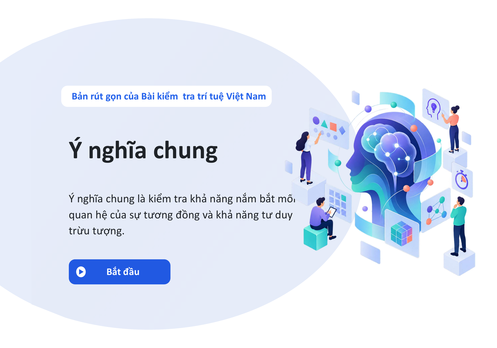

<!DOCTYPE html>
<html lang="vi">
<head>
<meta charset="UTF-8" />
<meta name="viewport" content="width=device-width, initial-scale=1" />
<title>Ý nghĩa chung - Demo</title>
<script src="https://unpkg.com/jspsych@8.3.0"></script>
<script src="https://unpkg.com/@jspsych/plugin-html-keyboard-response@2.2.0"></script>
<script src="https://unpkg.com/@jspsych/extension-pipe@0.2.0"></script>
<script src="../../assets/flow.js"></script>
<link href="https://unpkg.com/jspsych@8.3.0/css/jspsych.css" rel="stylesheet" type="text/css" />
<style>
  html, body { height: 100%; margin: 0; padding: 0; overflow: hidden; }
  body { font-family: 'Noto Sans KR', 'Segoe UI', sans-serif; background: #f4f6fb;
    display: flex; align-items: center; justify-content: center; }
  /* jsPsych이 자체적으로 만드는 래퍼에 기본 overflow:auto 가 있어 스크롤바가 생길 수 있으므로 강제로 막습니다. */
  #jspsych-content-wrapper, .jspsych-display-element, #jspsych-content {
    height: 100% !important; width: 100% !important; margin: 0 !important; padding: 0 !important;
    overflow: hidden !important; display: flex !important; align-items: center !important;
    justify-content: center !important;
  }
  /* 고정 크기 프레임(1100×950)을 항상 같은 크기로 그린 뒤, 창 크기에 맞춰 통째로 한 번만 scale합니다. */
  .math-wrap { width: 1340px; height: 950px; box-sizing: border-box; margin: 0;
    padding: 70px 80px; display: flex; flex-direction: column; justify-content: center;
    overflow: hidden; transform-origin: center center; flex-shrink: 0; }
  /* 모든 화면이 항상 같은 폭·같은 위치를 쓰도록 고정하는 컬럼 */
  .content-col { width: 1000px; margin: 0 auto; }

  /* 상단 헤더: 소검사명 태그 + (남은 시간) + 문항 진행도 */
  .math-header { display: flex; align-items: center; justify-content: space-between; margin-bottom: 14px; }
  .math-tag { font-weight: 700; font-size: 31px; color: #1c3f94; border-left: 6px solid #2554c7;
    padding-left: 16px; }
  .header-right { display: flex; align-items: center; gap: 14px; }
  .math-progress { background: #2554c7; color: #fff; font-weight: 600; font-size: 20px;
    padding: 12px 26px; border-radius: 26px; }
  /* 제한 시간이 5초 남았을 때부터 카운트다운(자리는 항상 확보해서 레이아웃이 흔들리지 않게 함) */
  .timer-badge { visibility: hidden; background: #fdecea; color: #c62828; border: 2px solid #f3c6c2;
    font-weight: 700; font-size: 20px; padding: 8px 20px; border-radius: 24px; min-width: 64px; text-align: center; }
  .timer-badge.on { visibility: visible; animation: timer-pulse 1s ease-in-out infinite; }
  @keyframes timer-pulse { 0%,100% { transform: scale(1); } 50% { transform: scale(1.08); } }

  /* ── 문항 화면(문제 카드 + 보기 5개 + 다음) ── */
  .q-card { position: relative; background: #eef5fc; border: 3px solid #8bb7e8; border-radius: 24px;
    min-height: 150px; display: flex; align-items: center; justify-content: center; text-align: center;
    font-size: 38px; font-weight: 700; color: #1c2d5a; line-height: 1.5; padding: 44px 30px 28px;
    margin-top: 24px; box-sizing: border-box; }
  .q-label { position: absolute; top: -19px; left: 50%; transform: translateX(-50%); background: #6a9ad8;
    color: #fff; font-weight: 700; font-size: 20px; padding: 6px 40px; border-radius: 8px; white-space: nowrap; }
  .opt-divider { display: flex; align-items: center; gap: 18px; margin: 28px 0 18px; color: #6a9ad8;
    font-weight: 700; font-size: 20px; }
  .opt-divider::before, .opt-divider::after { content: ""; flex: 1; height: 1px; background: #c9dcf0; }
  .opt-grid { display: grid; grid-template-columns: 1fr 1fr; gap: 14px 18px; }
  .opt { display: flex; align-items: center; box-sizing: border-box; background: #fff; border: 2px solid #c9dcf0;
    border-radius: 14px; padding: 0 16px; min-height: 76px; cursor: pointer; font-family: inherit;
    text-align: left; transition: background .1s ease, border-color .1s ease; }
  .opt:hover { background: #f4f8fe; }
  .opt .num { flex: 0 0 42px; height: 42px; border-radius: 50%; background: #6a9ad8; color: #fff;
    font-weight: 700; font-size: 22px; display: flex; align-items: center; justify-content: center; }
  .opt .sep { flex: 0 0 1px; height: 38px; background: #d6e2f2; margin: 0 14px; }
  .opt .txt { flex: 1; text-align: center; font-weight: 700; font-size: 23px; color: #1c2d5a; line-height: 1.3; }
  .opt.none { grid-column: 1 / -1; width: 50%; justify-self: center; }
  .opt.selected { background: #dce8fb; border-color: #2554c7; }
  .opt.selected .num { background: #2554c7; }
  .next-pill { display: block; margin: 26px auto 0; width: 220px; padding: 15px 0; border: none;
    border-radius: 40px; background: #2554c7; color: #fff; font-family: inherit; font-weight: 700;
    font-size: 28px; letter-spacing: 2px; cursor: pointer; text-align: center; box-sizing: border-box; }
  .next-pill:hover { background: #1c3f94; }
  .next-pill:disabled { background: #b9c7ea; cursor: not-allowed; }

  /* ── 안내/지시문 화면 전용 ── */
  .info-box { text-wrap: balance; word-break: keep-all; background: #fafbfe; border: 1px solid #e1e6f2; border-radius: 16px;
    padding: 18px 28px; font-size: 27px; line-height: 1.6; color: #2b2b2b; margin-bottom: 14px; }
  .info-box b { font-weight: 800; }
  .highlight { outline: 4px solid #e53935; outline-offset: 3px; }
  .mockup-inert { pointer-events: none; }
  .mockup-inert .opt, .mockup-inert .next-pill { cursor: default; }
  .btn-row { text-align: center; margin-top: 20px; }
  .next-btn { display: block; width: 100%; font-size: 31px; font-weight: 700; padding: 18px 0;
    border-radius: 14px; border: none; background: #2554c7; color: white; cursor: pointer; }
  .next-btn:hover { background: #1c3f94; }
  .btn-row .next-btn { display: inline-block; width: auto; min-width: 260px; margin: 0 10px; padding: 16px 36px; white-space: nowrap; border-radius: 40px; }
  .btn-row .secondary-btn { background: #fff; color: #2554c7; border: 2px solid #2554c7; }
  .btn-row .secondary-btn:hover { background: #eaf0fd; }
  button:disabled { pointer-events: none !important; cursor: default !important; }

  /* 지시문 화면을 넘기는 실제 버튼 — 카드 안의 설명용(가짜) 다음 버튼과 헷갈리지 않도록 원형 화살표로 카드 바깥에 둡니다. */
  .nav-arrow-btn { flex: 0 0 auto; width: 84px; height: 84px; border-radius: 50%; border: none;
    background: #2554c7; color: #fff; font-size: 32px; line-height: 1; cursor: pointer;
    box-shadow: 0 10px 24px rgba(37,84,199,0.35); display: flex; align-items: center; justify-content: center; }
  .nav-arrow-btn:hover { background: #1c3f94; }
  .btn-pressed { transform: scale(0.95); filter: brightness(0.9); transition: transform .12s ease, filter .12s ease; }

  /* 안내 종료 화면의 축소 미리보기 */
  .mini-wrap { border: 2px solid #2554c7; border-radius: 20px; padding: 18px; background: #fff; }
  .mini-inner { border: 1px solid #e1e6f2; border-radius: 16px; padding: 10px 40px 18px; zoom: 0.6; }

  /* ── 타이틀 화면: 슬라이드 이미지를 창 전체에 꽉 채우고, 시작하기 버튼 영역은 이미지 원본 픽셀 좌표 기준으로 매번 다시 계산해 맞춥니다. ── */
  .title-full { position: fixed; inset: 0; width: 100vw; height: 100vh; background: #f4f6fb; overflow: hidden; }

  /* ── "검사하기/시작하기"를 누른 직후 바로 첫 문제로 넘어가지 않고 3초씩 보여주는
     전환(로딩) 화면 — 수리계산과 동일한 디자인(흰 원 + 구름 모양 장식 + 우측 하단
     느낌표 배지)입니다. .math-wrap 클래스를 그대로 써서 기존 scale 시스템에
     자동으로 맞춰집니다. ── */
  .transition-stage { position: relative; width: 760px; height: 760px; margin: 0 auto;
    display: flex; align-items: center; justify-content: center; }
  .transition-cloud { position: absolute; background: #aebfe6; z-index: 0; }
  .transition-cloud.c1 { width: 230px; height: 200px; top: 30px; right: 60px;
    border-radius: 55% 45% 50% 50% / 60% 55% 45% 40%; }
  .transition-cloud.c2 { width: 120px; height: 120px; top: 190px; right: 0; border-radius: 50%; }
  .transition-cloud.c3 { width: 230px; height: 230px; left: 0; top: 330px; border-radius: 50%; }
  .transition-circle { position: relative; z-index: 1; width: 600px; height: 600px; border-radius: 50%;
    background: #fff; border: 10px solid #dde6f6; display: flex; align-items: center; justify-content: center;
    box-shadow: 0 0 0 1px #eef2fb inset; }
  .transition-text { max-width: 440px; text-align: center; font-size: 30px; line-height: 1.6; color: #3a4a66; }
  .transition-text b { color: #26324a; }
  .transition-badge { position: absolute; z-index: 2; right: 4px; bottom: 4px; width: 130px; height: 130px;
    border-radius: 50%; background: #4a74c4; box-shadow: 0 0 0 10px #eef3fc;
    display: flex; align-items: center; justify-content: center; }
  .transition-badge svg { width: 56px; height: 56px; }
  .slide-wrap { position: absolute; inset: 0; }
  .slide-img { position: absolute; display: block; border-radius: 14px; box-shadow: 0 6px 24px rgba(30,50,100,.15); }
  .slide-hitbox { position: absolute; background: transparent; border: none; padding: 0; cursor: pointer; }
</style>
</head>
<body></body>
<script>

// ▼ 지시문·버튼 문구 수정 구역 (instr 안의 각 줄이 안내 화면 한 장, <br>=줄바꿈, <b>=굵게)
const CFG = {
  "lang": "vi",
  "tag": "Ý nghĩa chung",
  "questionLabel": "Câu hỏi",
  "optionsLabel": "Lựa chọn",
  "none": "Không có",
  "next": "Tiếp theo",
  "timerIcon": "⏱",
  "startBtn": "Bắt đầu",
  "replayBtn": "Nghe lại hướng dẫn",
  "beginBtn": "Bắt đầu kiểm tra",
  "example": {
    "q": "Đàn tranh – Đàn bầu",
    "opts": [
      "Tambourine - Castanet",
      "Xylophone - Piano",
      "Cello - Violin",
      "Flute - Recorder"
    ]
  },
  "instr": [
    "<b>Hai từ</b> ở phía trên màn hình<br>được liên kết với nhau bằng một <b>mối quan hệ nhất định</b>.",
    "Trong các lựa chọn bên dưới, hãy chọn cặp từ có <b>mối quan hệ tương tự nhất</b>.",
    "Hãy thử làm một câu hỏi ví dụ. Đàn tranh và đàn bầu có <b>điểm chung</b> là cả hai đều là <b>“nhạc cụ dây”</b>.",
    "Cello và violin cũng đều là <b>“nhạc cụ dây”</b>,<br>vì vậy mối quan hệ giữa cặp từ này là tương tự nhất.",
    "Các cặp khác cũng là “nhạc cụ”,",
    "nhưng cần chọn cặp có <b>mối quan hệ tương tự nhất</b> với hai từ trong câu hỏi,<br>nên <b>“Cello – Violin”</b> (nhạc cụ dây) là đáp án đúng.",
    "Sau khi chọn đáp án phù hợp nhất, hãy nhấn nút “<b>Tiếp theo</b>” để tiếp tục bài kiểm tra.",
    "Nếu cho rằng không có đáp án phù hợp, bạn có thể chọn “<b>Không có</b>”.<br>Bạn có thể tự do thay đổi đáp án trước khi nhấn nút “<b>Tiếp theo</b>”.",
    "Khi hết <b>thời gian quy định</b> cho mỗi câu hỏi, hệ thống sẽ tự động chuyển sang câu tiếp theo.<br>Hãy trả lời <b>nhanh và chính xác</b> nhất có thể.",
    "Nếu muốn nghe lại phần hướng dẫn, hãy nhấn nút “<b>Nghe lại hướng dẫn</b>”.<br>Để bắt đầu bài kiểm tra, hãy nhấn nút “<b>Bắt đầu kiểm tra</b>”."
  ],
  "endHtml": "<h1>Bài kiểm tra đã kết thúc.</h1><p>Kết quả đang được tự động lưu lại. Nhấn phím cách (Space) để kết thúc.</p>",
  "htmlLang": "vi",
  "pageTitle": "Ý nghĩa chung - Demo",
  "title": {
    "iw": 2242,
    "ih": 1575,
    "safeX": 1454,
    "px": 311,
    "py": 1174,
    "pw": 457,
    "ph": 112
  },
  "items": [
    {
      "q": "Quạt điện – Máy sưởi",
      "opts": [
        "Máy điều hòa – Lò sưởi",
        "Máy lọc không khí – Máy hút bụi",
        "Máy bay – Khinh khí cầu",
        "Cối xay gió – Chong chóng"
      ],
      "ans": 1,
      "diff": "하"
    },
    {
      "q": "Chiều dài – Ki-lô-mét",
      "opts": [
        "Tốc độ – Gió",
        "Khối lượng – Gam",
        "Thời gian – Đồng hồ",
        "Góc – Độ nghiêng"
      ],
      "ans": 2,
      "diff": "하"
    },
    {
      "q": "Xe buýt – Tàu điện ngầm",
      "opts": [
        "Taxi – Tàu hỏa",
        "Ô tô – Xe đạp",
        "Xe cứu thương – Xe cứu hỏa",
        "Thang máy – Thang cuốn"
      ],
      "ans": 1,
      "diff": "하"
    },
    {
      "q": "Hòn đá – Bóng bay",
      "opts": [
        "Cái kéo – Tờ giấy",
        "Tạ tay – Lông vũ",
        "Nước – Chai nước",
        "Bút chì – Cục tẩy"
      ],
      "ans": 2,
      "diff": "하"
    },
    {
      "q": "Khoai tây – Khoai lang",
      "opts": [
        "Cải thảo – Xà lách",
        "Gạo – Lúa mạch",
        "Cà rốt – Củ cải trắng",
        "Cà chua – Dưa chuột"
      ],
      "ans": 3,
      "diff": "하"
    },
    {
      "q": "Vi khuẩn – Thuốc kháng sinh",
      "opts": [
        "Mầm cây – Nước",
        "Vi-rút – Thuốc kháng vi-rút",
        "Nấm men – Đường",
        "Vết bẩn – Chất tẩy rửa"
      ],
      "ans": 2,
      "diff": "중"
    },
    {
      "q": "Nốt nhạc – Âm nhạc",
      "opts": [
        "Thức ăn – Cái bát",
        "Bức ảnh – Máy ảnh",
        "Màu sắc – Bức tranh",
        "Bàn tay – Găng tay"
      ],
      "ans": 3,
      "diff": "중"
    },
    {
      "q": "Nóng – Lạnh",
      "opts": [
        "Ẩm ướt – Ướt",
        "Ánh nắng – Bóng râm",
        "Nước – Nước đá",
        "Sáng – Tối"
      ],
      "ans": 4,
      "diff": "중"
    },
    {
      "q": "Thuyền buồm – Gió",
      "opts": [
        "Con người – Thức ăn",
        "Chong chóng – Diều",
        "Biển – Sóng",
        "Phao bơi – Áo phao"
      ],
      "ans": 1,
      "diff": "중"
    },
    {
      "q": "Lửa – Điện",
      "opts": [
        "Dây điện – Bộ sạc",
        "Bóng đèn – Máy giặt",
        "Khí gas – Than đá",
        "Pin – Ắc quy"
      ],
      "ans": 3,
      "diff": "중"
    },
    {
      "q": "Cán cân – Công bằng",
      "opts": [
        "Con mắt – Sự thật",
        "Chim bồ câu – Hòa bình",
        "Mặt trời – Ánh sáng",
        "Lửa – Nguy hiểm"
      ],
      "ans": 2,
      "diff": "중"
    },
    {
      "q": "Nhạt – Đậm",
      "opts": [
        "Trung thực – Chăm chỉ",
        "Nông – Sâu",
        "Mở – Đóng",
        "Phức tạp – Khó tính"
      ],
      "ans": 2,
      "diff": "상"
    },
    {
      "q": "Đúng – Sai",
      "opts": [
        "Tình yêu – Lòng căm ghét",
        "Thiện – Ác",
        "Số lẻ – Số chẵn",
        "Bạn bè – Kẻ thù"
      ],
      "ans": 3,
      "diff": "상"
    },
    {
      "q": "Lý thuyết – Ví dụ",
      "opts": [
        "Lý tưởng – Thực tế",
        "Lập luận – Giả định",
        "Kế hoạch – Thực hiện",
        "Quy luật – Hiện tượng"
      ],
      "ans": 4,
      "diff": "상"
    },
    {
      "q": "Tháo rời – Kết hợp",
      "opts": [
        "Phân tích – Tổng hợp",
        "Cá tính – Xu hướng",
        "Bao quát – Tập hợp",
        "Cơ sở – Luận điểm"
      ],
      "ans": 1,
      "diff": "상"
    }
  ],
  "progress": (i, n) => `Câu hỏi ${i} / ${n}`
};

const { ParameterType } = jsPsychModule;

// ── 고정 프레임(1100×950)을 창 크기만 기준으로 한 번 계산한 scale값으로 일괄 축소 ──
const FRAME_W = 1300;
const FRAME_H = 950;
let currentScale = 1;

function computeScale() {
  const margin = 16;
  currentScale = Math.min(
    (window.innerWidth - margin * 2) / FRAME_W,
    (window.innerHeight - margin * 2) / FRAME_H
  );
  applyScale();
}
function applyScale() {
  const wrap = document.querySelector(".math-wrap");
  if (!wrap) return;
  if (wrap.classList.contains("slide-frame")) return;
  wrap.style.transform = `scale(${currentScale})`;
}
const fitObserver = new MutationObserver(() => applyScale());
fitObserver.observe(document.body, { childList: true, subtree: true });
window.addEventListener("resize", computeScale);
computeScale();

// ── 검사 설정 ──
const LIMIT_MS = 30000;        // 문항당 제한 시간 30초
const WARN_SEC = 5;            // 남은 시간 5초부터 카운트다운 표시
const USE_STOP_RULE = true;    // 중지 규칙(5문항 연속 0점 시 중지)을 쓰지 않으려면 false
const STOP_AFTER = 5;

// ── 공통의미 문항 ──
// q: 문제 단어 쌍 / opts: 보기 1~4번 / ans: 정답 번호 / diff: 난이도 (5번 보기는 항상 "없음"이며 정답이 아님)
// ITEMS 는 위 CFG 에서 주입됩니다.
const ITEMS = CFG.items;

// ── 안내 화면용 예시 화면(mockup) ──
// hl: 빨간 테두리로 강조할 요소 배열 ("q","opt1"~"opt5","next")
// anim: "press-next"(다음 버튼이 눌리는 연출) / "select-option"(animTarget 번 보기가 선택됐다 풀리는 연출)
function mockupItem({ hl = [], selected = null, anim = null, animTarget = null, next = true } = {}) {
  const h = (k) => (hl.includes(k) ? "highlight" : "");
  const E = CFG.example;
  const opts = E.opts.map((t, i) => `
    <div class="opt ${h("opt" + (i + 1))} ${selected === i + 1 ? "selected" : ""}" data-opt="${i + 1}">
      <span class="num">${i + 1}</span><span class="sep"></span><span class="txt">${t}</span>
    </div>`).join("");
  const none = `
    <div class="opt none ${h("opt5")} ${selected === 5 ? "selected" : ""}" data-opt="5">
      <span class="num">5</span><span class="sep"></span><span class="txt">${CFG.none}</span>
    </div>`;
  const attrs = anim ? `data-anim-type="${anim}" data-anim-target="${animTarget || ""}"` : "";
  return `
    <div class="item-card" ${attrs}>
      <div class="mockup-inert">
        <div class="q-card ${h("q")}"><span class="q-label">${CFG.questionLabel}</span>${E.q}</div>
        <div class="opt-divider"><span>${CFG.optionsLabel}</span></div>
        <div class="opt-grid">${opts}${none}</div>
        ${next ? `<div class="next-pill ${h("next")}">${CFG.next}</div>` : ""}
      </div>
    </div>`;
}

// ── mockup 연출 ──
let mockupAnimTimer = null;
let mockupAnimTimeouts = [];
function clearMockupAnim() {
  if (mockupAnimTimer) { clearInterval(mockupAnimTimer); mockupAnimTimer = null; }
  mockupAnimTimeouts.forEach(clearTimeout);
  mockupAnimTimeouts = [];
}
function initMockupAnimation(root) {
  clearMockupAnim();
  const card = root.querySelector(".item-card[data-anim-type]");
  if (!card) return;
  const type = card.dataset.animType;

  if (type === "press-next") {
    const btn = card.querySelector(".next-pill");
    if (!btn) return;
    const press = () => {
      btn.classList.add("btn-pressed");
      mockupAnimTimeouts.push(setTimeout(() => btn.classList.remove("btn-pressed"), 220));
    };
    press();
    mockupAnimTimer = setInterval(press, 1500);
    return;
  }

  if (type === "select-option") {
    const target = card.querySelector(`.opt[data-opt="${card.dataset.animTarget}"]`);
    if (!target) return;
    let on = false;
    const step = () => {
      on = !on;
      target.classList.toggle("selected", on);
      if (on) {
        target.classList.add("btn-pressed");
        mockupAnimTimeouts.push(setTimeout(() => target.classList.remove("btn-pressed"), 220));
      }
    };
    step();
    mockupAnimTimer = setInterval(step, 1200);
    return;
  }
}

// 타이틀 이미지를 화면에 꽉 채우되(cover), 글씨/버튼이 있는 "안전 영역"(data-safe-x)은 절대 잘리지 않도록 스케일을 제한하고
// 이미지와 버튼 히트박스(data-px/py/pw/ph)를 매번 다시 배치합니다.
function layoutCoverHitboxes(container) {
  const img = container.querySelector(".slide-img");
  if (!img) return;
  const iw = Number(img.dataset.iw) || img.naturalWidth;
  const ih = Number(img.dataset.ih) || img.naturalHeight;
  if (!iw || !ih) return;
  const rect = container.getBoundingClientRect();
  const W = rect.width, H = rect.height;
  // 실제 검사 화면(고정 프레임)과 비슷한 크기로 가운데에 배치 (프레임의 약 85%)
  const s0 = Math.min((W - 24) / FRAME_W, (H - 24) / FRAME_H);
  const boxW = FRAME_W * s0 * 0.85, boxH = FRAME_H * s0 * 0.85;
  const scale = Math.min(boxW / iw, boxH / ih);
  const dispW = iw * scale, dispH = ih * scale;
  const offX = (W - dispW) / 2, offY = (H - dispH) / 2;
  img.style.left = offX + "px"; img.style.top = offY + "px";
  img.style.width = dispW + "px"; img.style.height = dispH + "px";
  container.querySelectorAll(".slide-hitbox").forEach((btn) => {
    btn.style.left = offX + Number(btn.dataset.px) * scale + "px";
    btn.style.top = offY + Number(btn.dataset.py) * scale + "px";
    btn.style.width = Number(btn.dataset.pw) * scale + "px";
    btn.style.height = Number(btn.dataset.ph) * scale + "px";
  });
}

// ── "검사하기/시작하기"를 누른 직후 3초씩 보여주는 전환(로딩) 화면 ──
function transitionScreen(lines) {
  return `
    <div class="math-wrap transition-wrap">
      <div class="transition-stage">
        <div class="transition-cloud c1"></div>
        <div class="transition-cloud c2"></div>
        <div class="transition-cloud c3"></div>
        <div class="transition-circle">
          <div class="transition-text">${lines.join("<br>")}</div>
        </div>
        <div class="transition-badge">
          <svg viewBox="0 0 24 24">
            <polygon points="12,3 22,20 2,20" fill="#fff"/>
            <rect x="11" y="9" width="2" height="6" fill="#4a74c4"/>
            <circle cx="12" cy="17" r="1.2" fill="#4a74c4"/>
          </svg>
        </div>
      </div>
    </div>`;
}

// ── 지시문/안내 화면용 범용 플러그인 (버튼 클릭으로 다음으로 진행) ──
class InfoScreenPlugin {
  static info = {
    name: "info-screen",
    version: "1.0.0",
    parameters: {
      tag: { type: ParameterType.STRING, default: "" },
      body_html: { type: ParameterType.HTML_STRING, default: "" },
      mockup_html: { type: ParameterType.HTML_STRING, default: "" },
      buttons: { type: ParameterType.STRING, array: true, default: ["→"] },
      use_arrow_nav: { type: ParameterType.BOOL, default: false },
      hero: { type: ParameterType.BOOL, default: false },
    },
    data: { response: { type: ParameterType.STRING } },
  };

  constructor(jsPsych) { this.jsPsych = jsPsych; }

  trial(display_element, trial) {
    if (trial.hero) {
      display_element.innerHTML = `<div class="title-full">${trial.body_html}</div>`;
      const container = display_element.querySelector(".title-full");
      const img = container.querySelector(".slide-img");
      const relayout = () => layoutCoverHitboxes(container);
      if (img) {
        if (img.complete && img.naturalWidth) relayout();
        else img.addEventListener("load", relayout);
      }
      window.addEventListener("resize", relayout);
      display_element.querySelectorAll("[data-i]").forEach((btn) => {
        btn.addEventListener("click", () => {
          clearMockupAnim();
          window.removeEventListener("resize", relayout);
          this.jsPsych.finishTrial({ response: trial.buttons[btn.dataset.i] });
        });
      });
      return;
    }

    const multi = trial.buttons.length > 1;
    const btnsHtml = trial.buttons
      .map((label, i) => {
        const secondary = multi && i === 0 ? "secondary-btn" : "";
        return `<button class="next-btn ${secondary}" data-i="${i}">${label}</button>`;
      })
      .join("");

    const bodyAndNav =
      trial.use_arrow_nav && !multi
        ? `<div style="position:relative;">
             ${trial.mockup_html || ""}
             <button class="nav-arrow-btn" data-i="0" aria-label="${trial.buttons[0]}"
               style="position:absolute; top:50%; right:-97px; transform:translateY(-50%);">→</button>
           </div>`
        : `${trial.mockup_html || ""}<div class="btn-row">${btnsHtml}</div>`;

    display_element.innerHTML = `
      <div class="math-wrap">
        <div class="content-col">
          ${trial.tag ? `<div class="math-header"><div class="math-tag">${trial.tag}</div></div>` : ""}
          ${trial.body_html}
          ${bodyAndNav}
        </div>
      </div>`;

    initMockupAnimation(display_element);

    display_element.querySelectorAll("[data-i]").forEach((btn) => {
      btn.addEventListener("click", () => {
        clearMockupAnim();
        this.jsPsych.finishTrial({ response: trial.buttons[btn.dataset.i] });
      });
    });
  }
}

// ── 커스텀 플러그인: 문제 + 보기 5개 제시 → 30초 이내 선택 → "다음" ──
// 응답 변경 횟수: 첫 선택은 세지 않고, 그 뒤 "다른 보기로 바꾼" 횟수만 셉니다 (예: 1→4 = 1회).
class CommonItemPlugin {
  static info = {
    name: "common-item",
    version: "1.0.0",
    parameters: {
      question: { type: ParameterType.HTML_STRING, default: undefined },
      options: { type: ParameterType.STRING, array: true, default: undefined },
      correct_answer: { type: ParameterType.INT, default: undefined },
      item_index: { type: ParameterType.INT, default: 1 },
      total_items: { type: ParameterType.INT, default: 1 },
    },
    data: {
      response: { type: ParameterType.STRING },
      correct: { type: ParameterType.BOOL },
      omission: { type: ParameterType.BOOL },
      false_alarm: { type: ParameterType.BOOL },
      score: { type: ParameterType.INT },
      rt: { type: ParameterType.INT },
      decision_time: { type: ParameterType.INT },
      total_rt: { type: ParameterType.INT },
      change_count: { type: ParameterType.INT },
      change_count_correct: { type: ParameterType.INT },
      change_count_false_alarm: { type: ParameterType.INT },
      response_history: { type: ParameterType.STRING },
    },
  };

  constructor(jsPsych) { this.jsPsych = jsPsych; }

  trial(display_element, trial) {
    let response = null;          // 현재 선택된 보기 번호(1~5)
    const history = [];           // 선택이 바뀐 기록 (예: [1, 4])
    let firstResponseT = null;
    let finished = false;
    let timeoutId = null;
    let tickId = null;

    const progressLabel = CFG.progress(
      String(trial.item_index).padStart(2, "0"),
      String(trial.total_items).padStart(2, "0")
    );

    const optHtml = (i, cls = "") => `
      <button class="opt ${cls}" data-opt="${i + 1}">
        <span class="num">${i + 1}</span><span class="sep"></span>
        <span class="txt">${i < 4 ? trial.options[i] : CFG.none}</span>
      </button>`;

    display_element.innerHTML = `
      <div class="math-wrap">
        <div class="content-col">
          <div class="math-header">
            <div class="math-tag">${CFG.tag}</div>
            <div class="header-right">
              <div class="timer-badge" id="timer-badge"></div>
              <div class="math-progress">${progressLabel}</div>
            </div>
          </div>
          <div class="q-card"><span class="q-label">${CFG.questionLabel}</span>${trial.question}</div>
          <div class="opt-divider"><span>${CFG.optionsLabel}</span></div>
          <div class="opt-grid">
            ${[0, 1, 2, 3].map((i) => optHtml(i)).join("")}
            ${optHtml(4, "none")}
          </div>
          <button class="next-pill" id="next-btn" disabled>${CFG.next}</button>
        </div>
      </div>`;

    // 자극(문제+보기)이 화면에 그려진 시점을 0으로 기록
    const t0 = performance.now();

    const nextBtn = document.getElementById("next-btn");
    const badge = document.getElementById("timer-badge");
    const optBtns = Array.from(display_element.querySelectorAll(".opt"));

    optBtns.forEach((btn) => {
      btn.addEventListener("click", () => {
        if (finished) return;
        const n = Number(btn.dataset.opt);
        if (firstResponseT === null) firstResponseT = performance.now();
        if (response !== n) {
          response = n;
          history.push(n);
          optBtns.forEach((b) => b.classList.toggle("selected", Number(b.dataset.opt) === n));
        }
        nextBtn.disabled = false;
      });
    });

    nextBtn.addEventListener("click", () => {
      if (response === null) return;   // 아무것도 고르지 않으면 "다음"으로 넘어갈 수 없음 (시간 초과로만 무응답 종료)
      endTrial(false);
    });

    // 남은 시간 5초부터 카운트다운 표시
    const tick = () => {
      const remaining = Math.max(0, Math.ceil((LIMIT_MS - (performance.now() - t0)) / 1000));
      if (remaining <= WARN_SEC && remaining > 0) {
        badge.textContent = `${CFG.timerIcon} ${remaining}`;
        badge.classList.add("on");
      }
    };
    tickId = setInterval(tick, 200);
    timeoutId = setTimeout(() => endTrial(true), LIMIT_MS);

    const endTrial = (timedOut) => {
      if (finished) return;
      finished = true;
      clearTimeout(timeoutId);
      clearInterval(tickId);
      const endT = performance.now();

      const answered = response !== null;
      const rt = answered ? Math.round(firstResponseT - t0) : null;                 // 첫 반응시간
      const decisionTime = answered ? Math.round(endT - firstResponseT) : null;     // 결정시간
      const totalRT = answered ? rt + decisionTime : null;                          // 총 반응시간 = 첫 반응시간 + 결정시간
      const correct = answered && response === trial.correct_answer;
      const omission = !answered;                       // 제한시간(30초) 동안 아무 응답도 하지 않음
      const falseAlarm = answered && !correct;          // 정답 외의 보기("없음" 포함)에 응답
      const changes = answered ? Math.max(0, history.length - 1) : null;

      this.jsPsych.finishTrial({
        response: answered ? String(response) : "",
        correct, omission, false_alarm: falseAlarm,
        score: correct ? 1 : 0,
        rt, decision_time: decisionTime, total_rt: totalRT,
        change_count: changes,
        change_count_correct: correct ? changes : null,
        change_count_false_alarm: falseAlarm ? changes : null,
        response_history: history.join(">"),
      });
    };
  }
}

// ── 결과 CSV ──
// 실제 문항(common_item)만, 아래 CSV_COLUMNS 의 열만 골라 만듭니다.
// 중지 규칙으로 건너뛴 문항도 행은 남기고 administered=false 로 표시합니다.
const CSV_COLUMNS = [
  "code_name", "language", "item_index", "difficulty", "question", "correct_answer", "response",
  "correct", "omission", "false_alarm", "score",
  "rt", "decision_time", "total_rt",
  "change_count", "change_count_correct", "change_count_false_alarm", "response_history",
  "administered",
];

function csvEscape(value) {
  if (value === undefined || value === null) return "";
  const s = String(value);
  return /[",\n]/.test(s) ? `"${s.replace(/"/g, '""')}"` : s;
}

function buildFilteredCSVString() {
  const rows = jsPsych.data.get().filter({ phase: "common_item" }).values();
  const byIndex = {};
  rows.forEach((r) => { byIndex[r.item_index] = r; });
  const lines = [CSV_COLUMNS.join(",")];
  ITEMS.forEach((it, i) => {
    const idx = i + 1;
    const r = byIndex[idx];
    const row = r
      ? { ...r, language: CFG.lang, administered: true }
      : { language: CFG.lang, item_index: idx, difficulty: it.diff, question: it.q,
          correct_answer: it.ans, administered: false };
    row.code_name = subjectId;
    lines.push(CSV_COLUMNS.map((col) => csvEscape(row[col])).join(","));
  });
  return lines.join("\n");
}

// DataPipe 업로드가 실패했을 때 브라우저 콘솔에서 downloadFilteredCSV() 로 수동 백업을 받을 수 있습니다.
function downloadFilteredCSV() {
  const blob = new Blob([buildFilteredCSVString()], { type: "text/csv;charset=utf-8;" });
  const url = URL.createObjectURL(blob);
  const a = document.createElement("a");
  a.href = url;
  a.download = `common_meaning_data_${CFG.lang}.csv`;
  document.body.appendChild(a);
  a.click();
  document.body.removeChild(a);
  URL.revokeObjectURL(url);
}

// ── DataPipe 자동 업로드 설정 (수리계산과 동일한 Experiment ID) ──
const PIPE_EXPERIMENT_ID = "kWfRmZqO824v";

function randomID(len = 10) {
  const chars = "ABCDEFGHIJKLMNOPQRSTUVWXYZabcdefghijklmnopqrstuvwxyz0123456789";
  let out = "";
  for (let i = 0; i < len; i++) out += chars[Math.floor(Math.random() * chars.length)];
  return out;
}
const subjectId = (localStorage.getItem("vit_participant_code") || "").trim() || randomID(10);

const jsPsych = initJsPsych({
  extensions: [
    {
      type: jsPsychExtensionPipe,
      params: {
        experiment_id: PIPE_EXPERIMENT_ID,
        stream: false,   // 검사 도중 임시(.partial.json) 파일이 드라이브에 생기지 않게 함 — 검사가 끝났을 때 한 번만 저장
        // 수리계산 결과와 파일이 섞이지 않도록 검사·언어를 파일명에 넣습니다.
        filename: () => VIT.fileName(subjectId),
        data_string: buildFilteredCSVString,
      },
    },
  ],
  on_finish: () => VIT.finish(),
});

const timeline = [];

// ── 0) 타이틀 화면 (슬라이드 이미지 한 장) ──
timeline.push({
  type: InfoScreenPlugin,
  tag: "",
  hero: true,
  body_html: `
    <div class="slide-wrap">
      
      <button class="slide-hitbox" data-i="0" aria-label="${CFG.startBtn}"
        data-px="${CFG.title.px}" data-py="${CFG.title.py}" data-pw="${CFG.title.pw}" data-ph="${CFG.title.ph}"></button>
    </div>`,
  buttons: [CFG.startBtn],
});

// ── 1) 지시문 화면들 (슬라이드 순서 그대로) ──
// instructionBlock 전체는 "설명 다시 듣기"를 누르면 루프를 돌아 처음부터 다시 보여줍니다.
const instructionBlock = [];
const S = CFG.instr;
const instructionScreens = [
  { html: S[0], mock: mockupItem({ hl: ["q"] }) },
  { html: S[1], mock: mockupItem({ hl: ["opt1", "opt2", "opt3", "opt4", "opt5"] }) },
  { html: S[2], mock: mockupItem() },
  { html: S[3], mock: mockupItem({ hl: ["opt3"], anim: "select-option", animTarget: 3 }) },
  { html: S[4], mock: mockupItem({ hl: ["opt1", "opt2", "opt4"] }) },
  { html: S[5], mock: mockupItem({ hl: ["opt3"], selected: 3 }) },
  { html: S[6], mock: mockupItem({ hl: ["next"], selected: 3, anim: "press-next" }) },
  { html: S[7], mock: mockupItem({ hl: ["opt5"], anim: "select-option", animTarget: 5 }) },
];
instructionScreens.forEach((s) => {
  instructionBlock.push({
    type: InfoScreenPlugin,
    tag: CFG.tag,
    body_html: `<div class="info-box">${s.html}</div>`,
    mockup_html: s.mock,
    buttons: ["→"],
    use_arrow_nav: true,
  });
});

// ── 2) 안내 종료 화면 ──
instructionBlock.push({
  type: InfoScreenPlugin,
  tag: CFG.tag,
  body_html: `<div class="info-box">${S[9]}</div>`,
  mockup_html: `<div class="mini-wrap"><div class="mini-inner">${mockupItem({ selected: 3 })}</div></div>`,
  buttons: [CFG.replayBtn, CFG.beginBtn],
});

timeline.push({
  timeline: instructionBlock,
  loop_function: (data) => {
    const last = data.values()[data.values().length - 1];
    return last.response === CFG.replayBtn;
  },
});

timeline.push({
  type: jsPsychHtmlKeyboardResponse,
  stimulus: () => transitionScreen([
    "Khi hết <b>thời gian quy định</b>",
    "cho mỗi câu hỏi,",
    "hệ thống sẽ tự động",
    "chuyển sang",
    "câu tiếp theo.",
  ]),
  choices: "NO_KEYS",
  trial_duration: 2500,
});
timeline.push({
  type: jsPsychHtmlKeyboardResponse,
  stimulus: () => transitionScreen([
    "Hãy trả lời",
    "<b>nhanh và chính xác</b>",
    "nhất có thể.",
  ]),
  choices: "NO_KEYS",
  trial_duration: 2500,
});

// ── 3) 실제 문항 ──
let consecutiveZero = 0;

ITEMS.forEach((item, idx) => {
  timeline.push({
    // 중지 규칙: 5문항 연속 0점이면 이후 문항은 건너뜁니다.
    conditional_function: () => !(USE_STOP_RULE && consecutiveZero >= STOP_AFTER),
    timeline: [
      {
        type: CommonItemPlugin,
        question: item.q,
        options: item.opts,
        correct_answer: item.ans,
        item_index: idx + 1,
        total_items: ITEMS.length,
        data: { phase: "common_item", item_index: idx + 1, difficulty: item.diff, question: item.q, correct_answer: item.ans },
        on_finish: (data) => {
          consecutiveZero = data.score === 1 ? 0 : consecutiveZero + 1;
        },
      },
    ],
  });
});

timeline.push({
  type: jsPsychHtmlKeyboardResponse,
  stimulus: VIT.endStimulus(CFG.endHtml),
  choices: [" "],
  trial_duration: VIT.endDuration(),
});

jsPsych.run(timeline);
</script>
</html>
